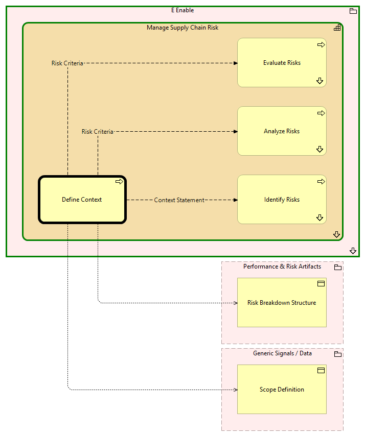

Define Context - Context
(
)

generated_by
build_archi_xml.py::gen_proc_node_context_view
generator_path
pedro/capabilities/build_archi_xml_assign/build_archi_xml_assign.py
run_at
2026-10-19T21:03:02
view_type
process_context
E Enable
Manage Supply Chain Risk
Identify Risks
Identify Risks - Context
Analyze Risks
Analyze Risks - Context
Define Context
Evaluate Risks
Evaluate Risks - Context
Manage Supply Chain Risk - Processes
E Enable - Processes
Performance & Risk Artifacts
Risk Breakdown Structure
Generic Signals / Data
Scope Definition
Risk Criteria
Define Context
Analyze Risks
Risk Criteria
Define Context
Evaluate Risks
Context Statement
Define Context
Identify Risks
Define Context
Risk Breakdown Structure
Define Context
Scope Definition